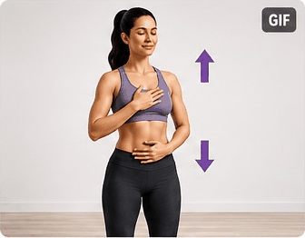

Mi perfil
Se guarda únicamente en este dispositivo.
¿Cómo te sientes hoy?
Presión antes de entrenar
Opcional, recomendada si tienes hipertensión.
🩺
Opciones rápidas
Calendario semanal
Cada día marcado representa una sesión completada. La constancia vale más que la intensidad.
Nuevas rutinas
Fuerza, equilibrio, flexibilidad y cardio ligero.
✨
Plan para hoy
Duración8–12 min
IntensidadMuy suave
EnfoqueMovilidad
Sin saltosRitmo conversacionalPausas libresSin aguantar la respiración
Detén el ejercicio ante dolor en el pecho, falta de aire intensa o inesperada, desmayo, debilidad o entumecimiento súbito, alteraciones de la visión o dificultad para hablar.
Rutina adaptada
Progreso de la rutina
Ejercicio 0 de 00 min
Observa el movimiento
↕
Demostración humana 3D
↕
Demostración humana animada
↕
Animación activa
Demostración animada

Descanso
20
Respira con calma y prepárate para el siguiente ejercicio.
Ahora
Elige una rutina
00:00
Cómo hacerlo
Respiración: Respira con naturalidad.
Muévete dentro de un rango cómodo.
🔊 Si Voz está activada en Ajustes, la app anunciará el ejercicio, avisará cuando queden 10 segundos y guiará los descansos.
Escala de esfuerzo
Busca un esfuerzo aproximado de 2–4 sobre 10: notas que estás trabajando, pero todavía puedes hablar. Si hoy el esfuerzo se siente claramente mayor, reduce el ritmo o pasa a la versión sentada.
Mi progreso
Sesiones0
Minutos0
Semana sugerida1
Programa de 12 semanas
No hay obligación de avanzar cada semana. Repetir una semana es parte del programa si todavía representa un reto.
Tendencias
Resumen visual de tus últimos registros.
Registro de salud
Biblioteca de rutinas
Rutinas adicionales adaptadas de tu archivo Vitalidad 50.
📚
Selecciona una rutina
Aquí verás los ejercicios, adaptaciones y precauciones.
Adaptación automática: si tu perfil indica movilidad principalmente sentada o seleccionas molestias de rodilla, espalda u hombro, la app sustituirá o excluirá los ejercicios menos apropiados.
Guía durante el ejercicio
Voz
Dice el ejercicio y las instrucciones.
Vibración
Aviso al cambiar de ejercicio.
Sonido
Señal breve al finalizar.
Seguridad
Esta app no diagnostica ni sustituye una evaluación médica. Si tu profesional de salud te indicó límites particulares de presión, frecuencia cardiaca, esfuerzo o movimiento, esos límites tienen prioridad.
Si la presión es mayor de 180/120 mmHg, espera al menos 1 minuto y repite la medición. La app no iniciará una rutina automática. Si permanece así, contacta a tu profesional; si además hay síntomas de alarma, busca atención de emergencia.